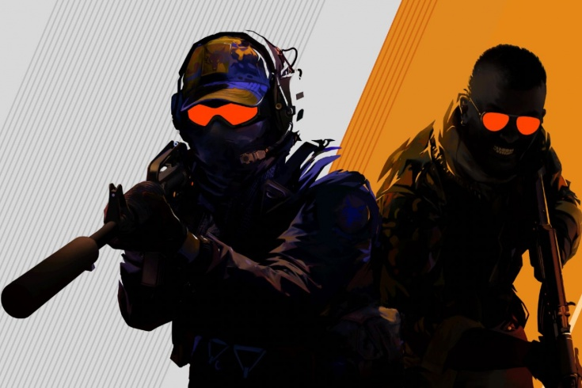

ВИДЕО

Что же появилось в новой кс-го 2?
В Counter-Strike 2 разработчики улучшили все визуальные эффекты, в том числе от взрывов, огня, вспышек от выстрела, попаданий и рассечения воздуха пулями.
Valve рассказали, что пятна крови в обновлённой игре совпадают с направлением выстрела и высыхают со временем, а места попадания пуль видно издалека.
COUNTER-STRIKE 2 переработали интерфейс — его сделали более современным и информативным.
Активным игрокам Counter-Strike также не стоит переживать за все свои скины и другие накопления — они перейдут в Counter-Strike 2. Более того, они даже будут выглядеть лучше за счёт нововведений Source 2 и использования новых технологий.
Вместе с анонсом Counter-Strike 2 Valve опубликовала множество официальных скриншотов из новой версии игры. Сравнив их с аналогичными кадрами из CS:GO, можно наглядно посмотреть, как изменится графика после перехода на Source 2.
Ключевыми изменениями являются освещение и отражения. При этом и сами текстуры станут более детализированными, что наверняка заметно повлияет на системные требования игры. В целом, Counter-Strike 2 будет выглядеть реалистичнее.
Valve представила обновленную систему звука для Counter-Strike 2.
«Звуки для Counter-Strike 2 были переработаны: теперь они лучше передают окружение, более различимы и дают больше информации. Мы также поработали над их балансом, чтобы игра звучала как можно приятнее», — сказано на официальном сайте CS 2
Вы можете найти нас сдесь.
created with
HTML Editor Free .